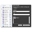

|
|
Journler 2.5.4
Fixes and features that make your favorite journaling app even better.
|
Leopard compatibility
Journler 2.5.4 has been tested and retested for Leopard compatibility.
|
The new tags
Improved tagging brings an industry standard to your journal, cross-linking your entries with even more efficiency.
|
The new license
Journler is becoming a shareware application. Get the latest news on the changes and find out why they're necessary.
|
 Blogging
Blogging
Major blogging changes that remove built-in support for posting to a weblog while adding direct integration with well established 3rd party applications.
|
And more
Including MailTags keywords integration, better PDF handling, and fixes left and right which improve stability and functionality.
|
|
Journler grows up. 2.5 walks into town!
The long awaited update to the popular Journler. Journaling and entry based information management for your Mac.
|
 Writer-in-Mind Features
Writer-in-Mind Features
A half dozen features for the writer in all of us. Live word count, spelling auto-correction, smart quotes and much more.
|
 Snapshot: A Picture in Your Entry
Snapshot: A Picture in Your Entry
Journler already did video and audio, now it does pictures as well. Forgot your camera but have an iSight enabled Mac?
Quickly add a picture to your entry.
|
Mail Integration
Send attached files and media directly to Mail, including them with your entry's text.
You can also copy Mail messages into your journal as a permanent reference.
And of course you can view them right inside Journler.
|
The Lexicon
View the document-term relationships in your journal or right click a word in an entry or file
and instantaneously jump to any other occurrence of that word anywhere in any of your entries or media. Oh yeah.
|
And much more!
Media support
|
New license policy
|
Preferences
|

Get stuff in
|
File management
|
|
|
|
|